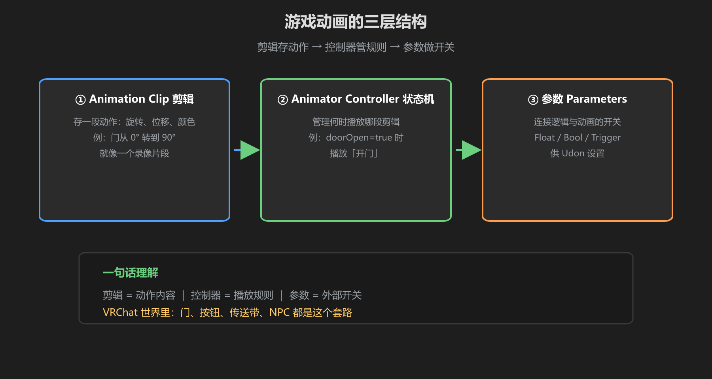
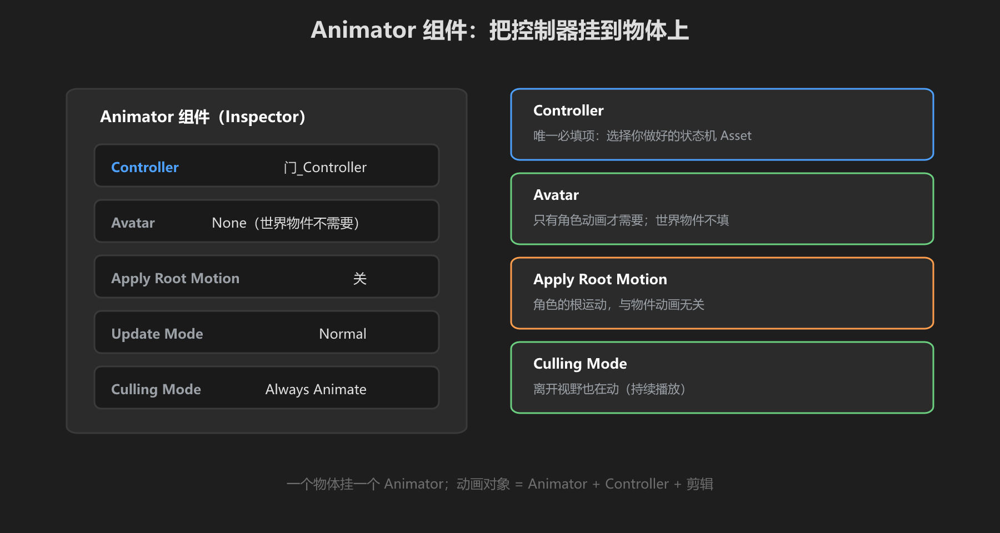

第 1 篇：动画是什么 — 剪辑、状态机、参数
VRChat 世界里的开门、按钮、传送带、NPC —— 都是动画。Unity 的动画系统分三层，这一篇先把三层结构看明白。
1. 动画的三层结构

图：Animation Clip（怎么动）→ Animator Controller（什么时候动）→ 参数（谁决定）
| 层 | 是什么 | 举例 |
|---|---|---|
| Animation Clip | 一段记录「物体怎么动」的片段（关键帧） | 门从 0° 转到 90° |
| Animator Controller | 状态机：管理多个 Clip 谁在播、何时切换 | 门「关闭」态 ↔「打开」态 |
| 参数 Parameter | 外部（Udon）设置的开关/数值 | isOpen = true → 播放打开动画 |
一句话：Clip 是「动作」，Controller 是「剧本」，参数是「导演的命令」。你写 Udon 就是在当导演。
2. Animator 组件

图：Animator 组件挂在物体上，指定 Controller
- Controller：要用的状态机（.controller 资源）
- Avatar：人形动画才需要，物体动画留空
- Update Mode：默认 Normal（按帧更新）即可
VRChat 世界注意：我们做的是「物体动画」，不是角色动画 —— Animator 的 Avatar 留空，一切按 Transform 动画来做，简单又可靠。
3. 动画 vs 特效 vs 脚本移动
| 方式 | 适合 | 不适合 |
|---|---|---|
| 动画（Animator） | 有状态、需要切换的动作 | 纯逻辑驱动（如计分） |
| 脚本移动 | 简单往复、数值变化 | 多段复杂动作 |
| 粒子特效 | 烟雾、光效 | 固体物体的位移 |
判断口诀：「几个状态 + 切换」就用 Animator；「一个数变了」用脚本。门有两个状态，所以用 Animator。
学前检查清单
- 理解了动画三层结构（Clip/Controller/参数）
- 知道 Animator 组件挂在哪、填什么
- 能判断一个动作用动画还是脚本